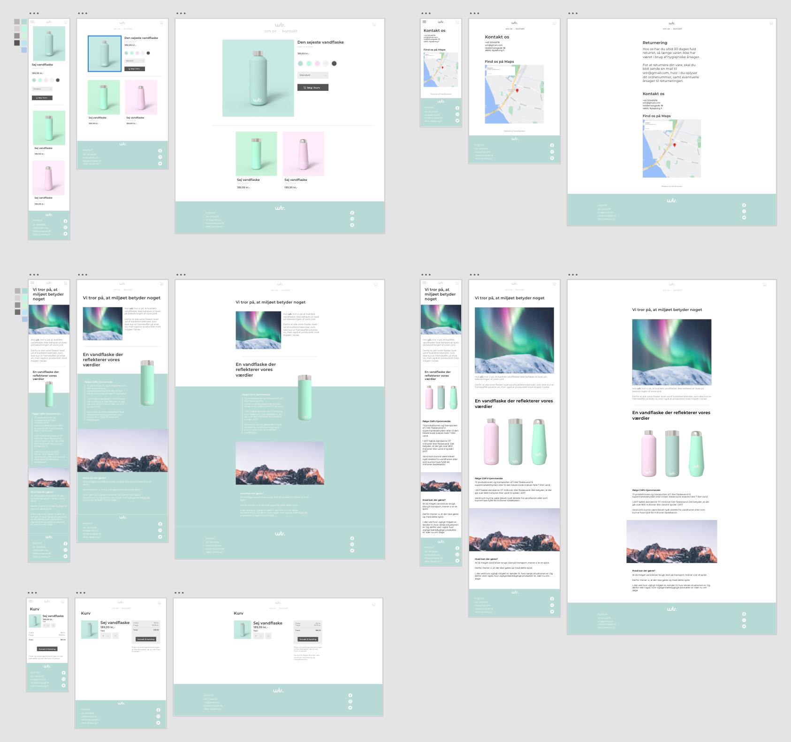

En bæredygtig, miljøvenlig og genbrugelig vandflaske med attraktivt, simpel design.
Krav
Projektets opgavebeskrivelse var at designe et fiktivt brand, i dette tilfælde en miljøvenlig vandflaske, med egen hjemmeside og SoMe videor til.
- - Prototype på salgsplatform kodet i HTML og CSS (med grid/flexbox)
- - To videoposts til sociale medier
- - Dokumentation af projektstyring (moodboard, wireframes, mockups, målgruppe osv.)
Min rolle

Jeg stod til at lave moodboards, wireframes, mockups (som ses for oven), kode en side
(produktsiden som ses øverst til venstre), brugerscenarie, grammatisk rettelse af
rapporten og versionsstyring med GIT.
Jeg var dog også med til målgruppesegmentering, persona og brugerscenarier, brugertest
og contentplan, da de blev lavet i fællesskab med resten af gruppens fem medlemmer.
Tankerne bag
For at brandet skulle udstråle bæredygtighed, miljøvenlighed og genbrugelighed,
skulle målgruppen først findes. Den blev valgt til at være studerende,
miljøbevidste unge.
Derfor blev det endelige design, efter wireframes, moodboards og test, valgt til
at være et moderne, simpelt, minimalistisk pastel farvet look.